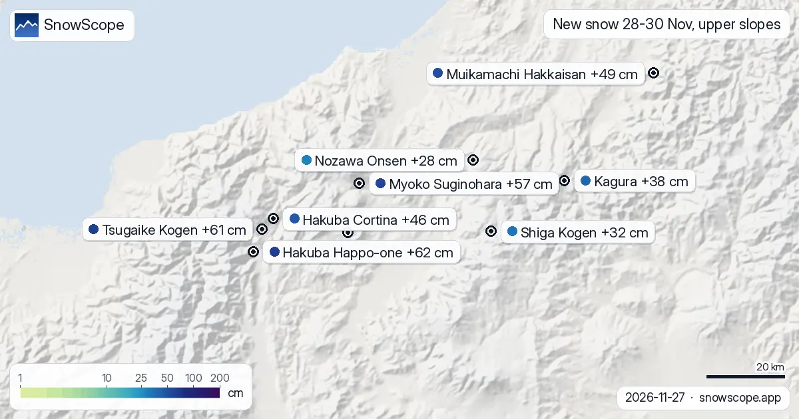

Japan Alps snowstorm this weekend: rain first, then about 60 cm for Hakuba, Tsugaike and Myoko (28-30 November 2026)
The second big storm of the season reaches the Northern Japanese Alps this weekend, and it comes in two very different halves. On Saturday 28 November warm, wet air brings heavy rain to the valleys and even to the lower lifts. Then, overnight into Sunday 29 November, cold air arrives behind it and turns everything above mid-mountain to snow. On our map of 27 November, Hakuba Happo-one gets about 62 cm of new snow on its upper slopes from 28 to 30 November, Tsugaike Kogen about 61 cm and Myoko Suginohara about 57 cm. These are the three biggest totals in Japan for the weekend.
See the live snow forecast for Hakuba Happo-one in the SnowScope appSnow depth, powder alerts and the 3D map, free.
Where the snow falls
The storm is aimed at the high ground between the Hakuba valley and Myoko, on the Sea of Japan side of Nagano and Niigata. Hakuba 47 and Hakuba Goryu each get about 56 cm on the upper slopes, Muikamachi Hakkaisan in Niigata about 49 cm, Hakuba Cortina about 46 cm and Togakushi and Hakuba Iwatake about 44 cm.
Further east the totals drop. Akakura Kanko gets about 39 cm, Kagura about 38 cm, Madarao about 33 cm, Shiga Kogen at Yakebitai about 32 cm and Nozawa Onsen about 28 cm. All of Japan feels the change: on our map the number of ski areas with snow on their upper slopes goes from 315 of 523 today to 446 on Sunday, and the snow-covered area of the country doubles, from about 52,690 km² to about 105,010 km².
| Resort | Snow today | New snow 28-30 Nov | Snow on 29 Nov |
|---|---|---|---|
| Hakuba Happo-one | 41 cm | 62 cm | 67 cm |
| Tsugaike Kogen | 43 cm | 61 cm | 74 cm |
| Myoko Suginohara | 44 cm | 57 cm | 70 cm |
| Hakuba 47 | 39 cm | 56 cm | 62 cm |
| Hakuba Goryu | 39 cm | 56 cm | 62 cm |
| Muikamachi Hakkaisan | 35 cm | 49 cm | 51 cm |
| Hakuba Cortina | 28 cm | 46 cm | 51 cm |
| Akakura Kanko | 35 cm | 39 cm | 57 cm |
| Kagura | 30 cm | 38 cm | 41 cm |
| Shiga Kogen (Yakebitai) | 13 cm | 32 cm | 28 cm |
| Nozawa Onsen | 8 cm | 28 cm | 25 cm |

How sure is the forecast?
We also ran our ensemble forecast for the top lift of 14 resorts. For 28 and 29 November together, the top of Hakuba Happo-one at 1,827 m gets a middle forecast of about 55 cm, with the lowest forecast at 40 cm and the highest at 69 cm. Even the most cautious forecast brings a real dump of snow there.
Elsewhere the spread is wider. At Tsugaike the middle forecast is about 37 cm, but the range runs from 22 cm to 69 cm. Hakuba 47 gets about 42 cm (27 to 68 cm), Kagura about 39 cm, Akakura Kanko about 38 cm, Hakuba Goryu about 36 cm, Nozawa Onsen about 35 cm and Myoko Suginohara about 31 cm at the top (21 to 41 cm). The short version: half a metre is likely on the highest lifts of Hakuba, and 30 to 40 cm is a fair bet across Myoko and Nozawa.
Saturday rain, Sunday powder
The timing matters more than the totals. On Saturday 28 November the top of Hakuba Happo-one gets about 15 cm of snow but also about 40 mm of rain, with temperatures between about -3 °C and 4 °C. Mid-mountain, at 1,289 m, gets about 40 mm of rain and no snow at all, and the 751 m base about 21 mm of rain with a high of about 13 °C.
On Sunday 29 November the cold air takes over. The top gets about 40 cm of new snow, between 25 cm and 50 cm, with temperatures falling to about -13 °C. Mid-mountain turns to snow too, with about 21 cm. The base stays below the snow line for the whole storm: about 23 mm more rain on Sunday and no snow on the valley floor. At the Hakuba village weather station, at 703 m, there were 5 cm of snow this morning, and the weekend rain will probably wash most of it away.
What the snow depth will look like
New snow is not the same as snow depth. Saturday's rain soaks the old snow, and fresh snow settles fast in the first days. On our map the snow on the upper slopes at Hakuba Happo-one grows from about 41 cm today to about 67 cm on Sunday, at Tsugaike from about 43 cm to about 74 cm and at Myoko Suginohara from about 44 cm to about 70 cm.
After the storm the weather goes quiet. From 30 November to 4 December the forecast has no new snow at the top of any of the 14 resorts, and the valleys warm up again: the middle forecast for the Hakuba base reaches about 14 °C on 1 and 2 December, and about 12 °C at the foot of Myoko. The cold nights at the top, near -12 °C on Sunday night, should keep the new snow on the upper slopes in good shape.
What it means for a ski trip
If you are in Nagano or Niigata this weekend, Saturday is a day for an onsen, not for the slopes. Sunday and Monday are the days to watch: the highest lifts will have the deepest, driest snow, and the lower runs will have a wet, heavy base under a thin new layer. Fresh snow on a rain-soaked base can hide rocks and streams, so stay on prepared runs where they are open.
This storm is a good start to the season, but it is not the deep, steady winter snow Japan is famous for; that usually comes from late December, when cold air from Siberia crosses the Sea of Japan day after day. Many resorts in the area open in early to mid-December, so check each resort's own opening date before you travel.
Follow the storm on the map
SnowScope covers Japan every day, from Hokkaido to the Japanese Alps, with snow depth, new snow and the forecast for 523 ski areas. Open Hakuba or Myoko on the map to see the snow at each height, and follow a resort to get a message when the next big snowfall is coming.
Tips for skiers
- Saturday 28 November: rain up to mid-mountain in Hakuba, snow only near the top.
- Sunday 29 November: about 40 cm at the top of Hakuba Happo-one, the best day for powder on the highest lifts.
- 30 November to 4 December: dry and mild in the valleys; the new snow stays on the upper slopes.
More maps (external sites)
About these numbers
Snow on the upper slopes, today and in the next days: the SnowScope snow map of 27 November 2026 (an estimate for the area of each ski resort, not the resort's own report). Town snow depth: measured at Japan's official weather stations at 09:00 Japan time. Forecast at the top lift, mid-mountain and base: an ensemble forecast, given as the lowest, middle and highest forecast.
Cite this report
For research, teaching or the press: the numbers and charts are free to reuse under CC BY 4.0 with this citation.
SnowScope (2026), Japan Alps snowstorm this weekend: rain first, then about 60 cm for Hakuba, Tsugaike and Myoko (28-30 November 2026), https://snowscope.app/blog/en/2026/11/japan-alps-snowstorm-hakuba-myoko-28-30-november-2026.html, accessed 2026-11-27
SnowScope (Atlas Labs). (2026, November 27). Japan Alps snowstorm this weekend: rain first, then about 60 cm for Hakuba, Tsugaike and Myoko (28-30 November 2026). SnowScope snow reports. https://snowscope.app/blog/en/2026/11/japan-alps-snowstorm-hakuba-myoko-28-30-november-2026.html
BibTeX
@misc{snowscope2026japanalpssnowstormhakuba,
author = {{SnowScope (Atlas Labs)}},
title = {Japan Alps snowstorm this weekend: rain first, then about 60 cm for Hakuba, Tsugaike and Myoko (28-30 November 2026)},
year = {2026},
month = nov,
howpublished = {\url{https://snowscope.app/blog/en/2026/11/japan-alps-snowstorm-hakuba-myoko-28-30-november-2026.html}},
note = {Published 2026-11-27 13:09 UTC; accessed 2026-11-27}
}· CC BY 4.0 · Methods, data and tools →
Follow Hakuba Happo-one
Free: a message when fresh snow is coming, and the forecast every morning.
More snow reports

Koktokay could get about 13 cm, Hemu and Jiangjunshan about 8 cm by 4 December; Chongli, Yanqing and the Jilin resorts stay dry.

Pick a region, dates, budget and what matters; get every resort ranked with the likely snow at the start, the pass, hotel and food per person, chalets to book, and a game mode.

A seasonal snow outlook for 18 Mediterranean ranges, from the Atlas to Erciyes, built from the ECMWF and Météo-France seasonal forecasts (51 members each). Every range is 1.1 to 2.7 °C warmer than the 1991-2020 normal, precipitation stays near normal, but snowfall is below normal on 16 of the 18 ranges: High Atlas -48 %, Apennines -28 %, Pyrenees -24 %, Alps near normal.